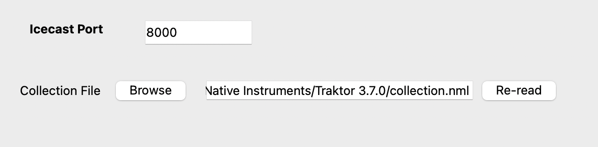

Traktor¶
The Traktor input source is a specialized version of the icecast source that also provides access to playlists for Request support .
{kind=link}
Locate the ‘collections.nml’ from your Traktor installation directory.
Click Re-read to rebuild What’s Now Playing’s copy of Traktor’s database so that more metadata is available. For extremely large Traktor databases, this update may take a while. This extra data is required for roulette Requests.
After adding more songs to Traktor, click Re-read again to update What’s Now Playing data.
In Traktor’s Preferences, go to Broadcasting
{kind=link}
Under Server Settings: #. Set the address to 127.0.0.1 for the same machine, otherwise change to the IP address of the machine that is running What’s Now Playing. (HINT: IP Address is visible on What’s Now Playing’s Webserver setting page) #. Change the Port to match the port in What’s Now Playing’s Iceast settings page. #. Change the format to be Ogg Vorbis, 11025 Hz, 32 kBit/s
Close Preferences
Back on the main Traktor screen, to activate Icecast broadcasting:
{kind=link}
Click on the reel on the right-hand side (labeled 1 above)
Click on the antenna near the middle (labeled 2 above)
The antenna should change to a solid color. If it flashes, then double check all settings in What’s Now Playing and Traktor to make sure they match.